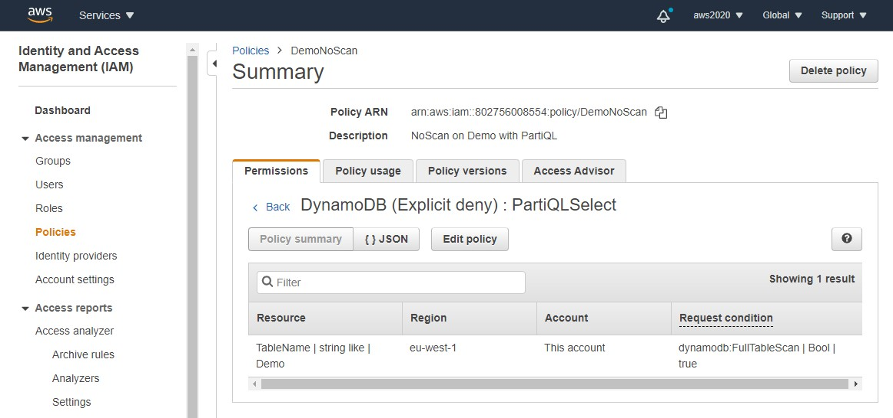

This was first published on https://www.dbi-services.com/blog/dynamodb-partiql-part-ii-select/ (2020-11-25)
Republishing here for new followers. The content is related to the versions available at the publication date.
.
In the previous post I insertd a few rows in a Demo table using the SQL-like new API on DynamoDB. I checked my items with a SELECT but was limited in the ORDER BY clause. Here is the most important to understand: there are no additional data processing engine here. PartiQL (pronounce it like ‘particle’ and it helps to avoid any kind of dyslexia) parses a statement with INSERT/UPDATE/DELETE/SELECT and calls the NoSQL API you already know (Put/Get/Update/Delete Item, Query and Scan). It looks like SQL but SQL is a language that declares operations on a set of rows, like relational tables or views, which are a logical layer above the physical model. In RDBMS, you build your SQL queries according to your business needs, not the physical layout. Of course, the physical layout (like indexing, partitioning) is also optimized for this access, but this is done independently. With PartiQL on DynamoDB you must know which operation will happen when you write your statement. Because all the simplicity and scalability of DynamoDB resides on the bounded API that matches the physical layout:
Of course, the cost is different. With the DynamoDB API you know which one you are doing because you call a different operation. With PartiQL you should know what you are doing but you execute the same statement (SELECT) and the data access will depend on the columns referenced in WHERE clause. Basically, if you don’t have an equality predicate on the partition (HASH) key, you have to read all partitions (Scan). If you have an equality predicate on the partition (HASH) key and inequality on the sort (RANGE) key you benefit from partition pruning (Query). This is obvious when you know what is a hash function, but error-prone if you don’t know the data model. The DynamoDB API helps you to prevent that because your fingers should hurt when typing “scan” for a large table.
So, if what you want is actually get all items, because you need all of them, or maybe to filter out a small part of them only, you want a scan. Yes, it reads everything, but it is the most efficient access to read a large portion of your table. Because with one RCU you can get many items. Doing the same (getting all items) with GetItem would cost one RCU per item (I suppose strong consistency and small items here). To put it basically, for OLTP workload (many users reading few items) you avoid scans on large tables. DynamoDB is a key-value store: the goal is to access by the key. And for some reporting or to export data, you may scan, which is expensive (in time and RCU) but not done frequently.
As seen in the previous post, scanning the whole table to get all items with all attributes is a simple SELECT * FROM:
[opc@a aws]$ aws dynamodb execute-statement --statement "select * from Demo"
{"Items":[
{"MyKeyPart":{"N":"2"},"MyUnstructuredData":{"S":"a"},"MyKeySort":{"N":"1"}},
{"MyKeyPart":{"N":"2"},"MyUnstructuredData":{"S":"use parameters when embedding SQL in programs"},"MyKeySort":{"N":"2"}},
{"MyKeyPart":{"N":"2"},"MyUnstructuredData":{"S":"c"},"MyKeySort":{"N":"3"}},
{"MyKeyPart":{"N":"2"},"MyUnstructuredData":{"S":"d"},"MyKeySort":{"N":"4"}},
{"MyKeyPart":{"N":"2"},"MyUnstructuredData":{"S":"e"},"MyKeySort":{"N":"5"}},
{"MyKeyPart":{"N":"1"},"MyUnstructuredData":{"S":"here is my first insert :)"},"MyKeySort":{"N":"1"}}
]}
As long as there’s no equality predicate on the primary key (or the hash part of it in case of composite hash/sort key) the SELECT will do a scan. I mentioned “equality”, we will see later when there are many equality predicates or a list of values to be equal to. We will see later, probably in a further post, what happens with secondary indexes. Anyway, this is not a RDBMS. When you query the table, there’s no query planer to optimize the access to read from an index. If you want to access by a secondary index, the index name must be mentioned in the FROM clause.
Another thing that we have seen in the previous post is that, as it is a scan, you cannot have the partition key in the ORDER BY because DynamoDB does not sort the rows when retrieved from multiple partitions, and PartiQL do not do further data processing on the result. So, basically, there’s no possible ORDER BY when not having a WHERE clause on the partition key:
[opc@a aws]$ aws dynamodb execute-statement --statement "select MyKeyPart,MyKeySort from Demo order by MyKeyPart"
An error occurred (ValidationException) when calling the ExecuteStatement operation: Must have WHERE clause in the statement when using ORDER BY clause.
[opc@a aws]$ aws dynamodb execute-statement --statement "select MyKeyPart,MyKeySort from Demo order by MyKeySort"
An error occurred (ValidationException) when calling the ExecuteStatement operation: Must have WHERE clause in the statement when using ORDER BY clause.
Then, if we query for one partition only, this is a Query rather than a Scan. Here is an example where I select only the items where MyKeyPart = 2 which, with the HASH function, maps to only one partition:
[opc@a aws]$ aws dynamodb execute-statement --statement "select MyKeyPart,MyKeySort from Demo where MyKeyPart = 2"
{"Items":[{"MyKeyPart":{"N":"2"},"MyKeySort":{"N":"1"}},{"MyKeyPart":{"N":"2"},"MyKeySort":{"N":"2"}},{"MyKeyPart":{"N":"2"},"MyKeySort":{"N":"3"}},{"MyKeyPart":{"N":"2"},"MyKeySort":{"N":"4"}},{"MyKeyPart":{"N":"2"},"MyKeySort":{"N":"5"}}]}
The items are ordered by MyKeySort even in the absence of ORDER BY because this is how it is stored and retreived physically within each partition. But, as SQL is a declarative language, I prefer not to rely on the order without ORDER BY clause.
Here is the correct way to do it, with no additional cost:
[opc@a aws]$ aws dynamodb execute-statement --statement "select MyKeyPart,MyKeySort from Demo where MyKeyPart = 2 order by MyKeySort"
{"Items":[{"MyKeyPart":{"N":"2"},"MyKeySort":{"N":"1"}},{"MyKeyPart":{"N":"2"},"MyKeySort":{"N":"2"}},{"MyKeyPart":{"N":"2"},"MyKeySort":{"N":"3"}},{"MyKeyPart":{"N":"2"},"MyKeySort":{"N":"4"}},{"MyKeyPart":{"N":"2"},"MyKeySort":{"N":"5"}}]}
[opc@a aws]$ aws dynamodb execute-statement --statement "select MyKeyPart,MyKeySort from Demo where MyKeyPart = 2 order by MyKeySort desc"
{"Items":[{"MyKeyPart":{"N":"2"},"MyKeySort":{"N":"5"}},{"MyKeyPart":{"N":"2"},"MyKeySort":{"N":"4"}},{"MyKeyPart":{"N":"2"},"MyKeySort":{"N":"3"}},{"MyKeyPart":{"N":"2"},"MyKeySort":{"N":"2"}},{"MyKeyPart":{"N":"2"},"MyKeySort":{"N":"1"}}]}
Here because there is only one value for MyKeyPart I didn’t need to put MyKeyPart in the ORDER BY, but with multiple values you need to:
[opc@a aws]$ aws dynamodb execute-statement --statement "select MyKeyPart,MyKeySort \
from Demo where MyKeyPart = 1 or MyKeyPart = 2 order by MyKeySort"
An error occurred (ValidationException) when calling the ExecuteStatement operation: Must have hash key in ORDER BY clause when more than one hash key condition specified in WHERE clause.
[opc@a aws]$ aws dynamodb execute-statement --statement "select MyKeyPart,MyKeySort \
from Demo where MyKeyPart = 1 or MyKeyPart = 2 order by MyKeyPart,MyKeyPart desc"
{"Items":[{"MyKeyPart":{"N":"1"},"MyKeySort":{"N":"1"}},{"MyKeyPart":{"N":"2"},"MyKeySort":{"N":"5"}},{"MyKeyPart":{"N":"2"},"MyKeySort":{"N":"4"}},{"MyKeyPart":{"N":"2"},"MyKeySort":{"N":"3"}},{"MyKeyPart":{"N":"2"},"MyKeySort":{"N":"2"}},{"MyKeyPart":{"N":"2"},"MyKeySort":{"N":"1"}}]}
[opc@a aws]$ aws dynamodb execute-statement --statement "select MyKeyPart,MyKeySort \
from Demo where MyKeyPart = 1 or MyKeyPart = 2 order by MyKeyPart desc,MyKeyPart"
{"Items":[{"MyKeyPart":{"N":"2"},"MyKeySort":{"N":"5"}},{"MyKeyPart":{"N":"2"},"MyKeySort":{"N":"4"}},{"MyKeyPart":{"N":"2"},"MyKeySort":{"N":"3"}},{"MyKeyPart":{"N":"2"},"MyKeySort":{"N":"2"}},{"MyKeyPart":{"N":"2"},"MyKeySort":{"N":"1"}},{"MyKeyPart":{"N":"1"},"MyKeySort":{"N":"1"}}]}
You might be surprised to see this query with multiple values run as a Query rather than a Scan. What if they come from multiple partitions?
This is possible when the number of values is well known in advance (“1” and “2” here) and then this can be sorted first, and a Query run for each of them. Of course, this will multiply the cost of it. For example, because I know that I inserted values 1 to 5, I can get all my items with:
[opc@a aws]$ aws dynamodb execute-statement --statement "select MyKeyPart,MyKeySort \
from Demo where MyKeyPart in [1,2,3,4,5] order by MyKeyPart,MyKeySort"
{"Items":[{"MyKeyPart":{"N":"1"},"MyKeySort":{"N":"1"}},{"MyKeyPart":{"N":"2"},"MyKeySort":{"N":"1"}},{"MyKeyPart":{"N":"2"},"MyKeySort":{"N":"2"}},{"MyKeyPart":{"N":"2"},"MyKeySort":{"N":"3"}},{"MyKeyPart":{"N":"2"},"MyKeySort":{"N":"4"}},{"MyKeyPart":{"N":"2"},"MyKeySort":{"N":"5"}}]}
So I’m able to get all items sorted now? Yes, but for a higher cost than a scan because it will query them one by one. I would be cheaper to Scan here but there is no optimizer to estimate the cost of both operations and choose the cheaper. But at least, the cost is predictable as it is proportional to the number of key values in the list.
I cannot use inequalities, or BETWEEN, because they work on a range and this Query access can be done only on known values.
[opc@a aws]$ aws dynamodb execute-statement --statement "select MyKeyPart,MyKeySort from Demo where MyKeyPart between 2 and 2 order by MyKeyPart,MyKeySort"
An error occurred (ValidationException) when calling the ExecuteStatement operation: Must have at least one non-optional hash key condition in WHERE clause when using ORDER BY clause.
Here, even if maths tells me that it is equivalent to equality (“MyKeyPart between 2 and 2” is the same as “MyKeyPart = 2”) we have no optimizer there to do those transformations. The rule is basic: a set of value can be sorted and queried individually but anything else is considered as a range of value that cannot be accessed with a hash function.
How can I be sure about this behaviour? I have a small table where the response time difference is not significant. Be best proof is to see what happens when full table scan is impossible. There’s an IAM policy to deny scans:
PartiQL documentation (https://t.co/ezzXfsyADB) explains the scenarios when a SELECT can become a SCAN. You can also explicitly deny Scan via IAM policy (https://t.co/elVs4HpvtM) to avoid full table scans.
— DynamoDB (@dynamodb) November 24, 2020

I have created a user with deny on “dynamodb:PartiQLSelect” action on condition “dynamodb:FullTableScan”=”True”
With this user profile I execute the following:
[opc@a aws]$ aws --profile noscan dynamodb execute-statement --statement "select MyKeyPart,MyKeySort \
from Demo"
An error occurred (AccessDeniedException) when calling the ExecuteStatement operation: User: arn:aws:iam::802756008554:user/ddb-noscan is not authorized to perform: dynamodb:PartiQLSelect on resource: arn:aws:dynamodb:eu-west-1:802756008554:table/Demo with an explicit deny
[opc@a aws]$ aws --profile noscan dynamodb execute-statement --statement "select MyKeyPart,MyKeySort \
from Demo where MyKeyPart in [1,2,3,4,5]"
{"Items":[{"MyKeyPart":{"N":"1"},"MyKeySort":{"N":"1"}},{"MyKeyPart":{"N":"2"},"MyKeySort":{"N":"1"}},{"MyKeyPart":{"N":"2"},"MyKeySort":{"N":"2"}},{"MyKeyPart":{"N":"2"},"MyKeySort":{"N":"3"}},{"MyKeyPart":{"N":"2"},"MyKeySort":{"N":"4"}},{"MyKeyPart":{"N":"2"},"MyKeySort":{"N":"5"}}]}
It is clear that when Full Table Scan is denied the WHERE on a list of 5 values is still possible. Because it 5 query calls instead of a scan.
I have additionally inserted many rows with MyKeyPart=10 and large size attributes, and query them:
$ aws dynamodb execute-statement --statement "select MyKeyPart,MyKeySort from Demo where MyKeyPart=10"
{"Items":[{"MyKeyPart":{"N":"10"},"MyKeySort":{"N":"1"}},{"MyKeyPart":{"N":"10"},"MyKeySort":{"N":"2"}},{"MyKeyPart":{"N":"10"},"MyKeySort":{"N":"3"}},{"MyKeyPart":{"N":"10"},"MyKeySort":{"N":"4"}},{"MyKeyPart":{"N":"10"},"MyKeySort":{"N":"5"}}],"NextToken":"CS4sUIPi4Efg7eSg4sGJZHJ09C/m8JWMwLXB+DF5n54EIBl6yuPZNAHfoRUFg7qgGg872qXswoXSZEI/XAIfvUPNisWSYGrPiquxLFakMecd6aF/ggaexxpKlhPS+ridkOXu8HoWIuWgSXFRBa32QmIXITRhrSMwuT1Q54+6Li6emcxvtpJfmxvxWf/yQkece5nqQIwH/EC3vAr1SZ4Pd537qexKejVHJ+2QrXALwG283UR/obWc53A2HTQ+G3cNeL4xOvVwp9gsOhlKxhsRrS+GqHRF0IHlGrpsdc0LkbMS1hISuagp/KZ0dqP/v7ejB6HsEHhFYZeKYZBoysTYTzhpB02NF3F4MSKp8QF4nO4vcq4="}
I get a few items and a “Next Token” that is quite large.
I can query the next pages with the –next-token option:
$ ws dynamodb execute-statement --statement "select MyKeyPart,MyKeySort from Demo where MyKeyPart=10 \
--next-token CS4sUIPi4Efg7eSg4sGJZHJ09C/m8JWMwLXB+DF5n54EIBl6yuPZNAHfoRUFg7qgGg872qXswoXSZEI/XAIfvUPNisWSYGrPiquxLFakMecd6aF/ggaexxpKlhPS+ridkOXu8HoWIuWgSXFRBa32QmIXITRhrSMwuT1Q54+6Li6emcxvtpJfmxvxWf/yQkece5nqQIwH/EC3vAr1SZ4Pd537qexKejVHJ+2QrXALwG283UR/obWc53A2HTQ+G3cNeL4xOvVwp9gsOhlKxhsRrS+GqHRF0IHlGrpsdc0LkbMS1hISuagp/KZ0dqP/v7ejB6HsEHhFYZeKYZBoysTYTzhpB02NF3F4MSKp8QF4nO4vcq4="
{"Items":[{"MyKeyPart":{"N":"10"},"MyKeySort":{"N":"6"}},{"MyKeyPart":{"N":"10"},"MyKeySort":{"N":"7"}},{"MyKeyPart":{"N":"10"},"MyKeySort":{"N":"8"}},{"MyKeyPart":{"N":"10"},"MyKeySort":{"N":"9"}},{"MyKeyPart":{"N":"10"},"MyKeySort":{"N":"10"}}],"NextToken":"FjHEA2wnIK74SlGaS6TiPSv2fEwfiZhJNHyxvJ+qG750oeKlqSNyx9IDdCUD+m2rSpodPIFJhYYQHXBM9sJed3k6qaA/aUk4s4DUlPvZHl7WAJ4rTY0AmNDUYBPqWyCV8FliSsGPtFTfj1A9T4zD1TU6uuvNIORY/zKHtsAjWzT4Jsg5y32MFcVOmOsDBhyWsQotFqxy1ErMGhJy3cQnEvy1P1KpQak6sflzp3sWLWzUgOXQB/xF1PXRtT8w/E1lPk26LnA/L2bA91nucuohN63hP3MVojPH0GkPCjZsx08wJTn4MEpqDArEREWO2XCkL/GI7vTtYw6GXRenKZoatSG55yKCVDkFRuw7cbK749mEIb6r6Xs="}
Again, this is completely different from SQL databases where you have cursors, but this is adapted to DynamoDB query that reads ranges of items with small chunks.
I used SELECT with * to get the whole item key and attributes (like ALL_ATTRIBUTES), and with a list of attributes to do a query projection (like SPECIFIC_ATTRIBUTES). There’s no aggregation and I don’t think we can do the equivalent of COUNT. Here is how I would do it if it were possible:
[opc@a aws]$ aws dynamodb execute-statement --statement "select count(*) from Demo"
An error occurred (ValidationException) when calling the ExecuteStatement operation: Unexpected path component at 1:8
This clearly not supported (yet).
According to the documentation expressions should be allowed, like this:
[opc@a aws]$ aws dynamodb execute-statement --statement "select MyKeyPart,MyKeySort,size(MyUnstructuredData) from Demo where MyKeyPart=2 and size(MyUnstructuredData)>10"
An error occurred (ValidationException) when calling the ExecuteStatement operation: Unexpected path component at 1:28
Apparently, this size() function is allowed only on the WHERE clause:
[opc@a aws]$ aws dynamodb execute-statement --statement "select MyKeyPart,MyKeySort from Demo where MyKeyPart=2 and size(MyUnstructuredData)>10"
{"Items":[{"MyKeyPart":{"N":"2"},"MyKeySort":{"N":"2"}}]}
In summary, be careful. You must know on which attributes you filter in the WHERE clause. Equality on partition key allows single hash partition access. Without it, it is a scan that can take time, and a lot of RCU (but this stays under limit thanks to 1MB the pagination – see the next post about it).
{kind=link}